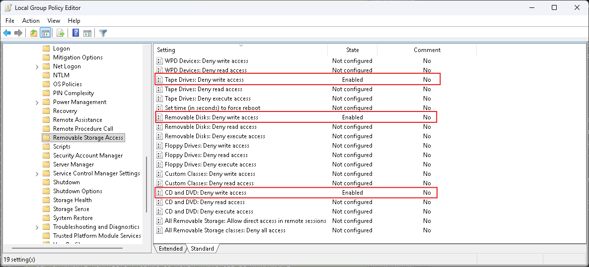
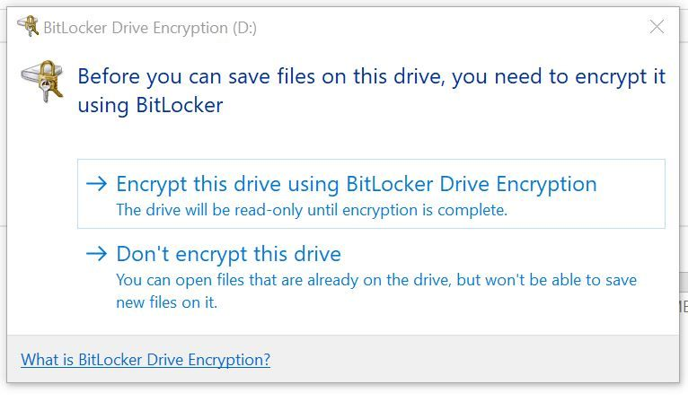
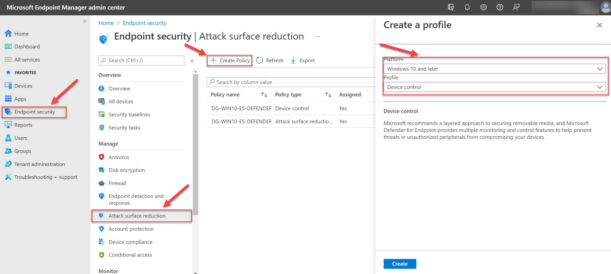
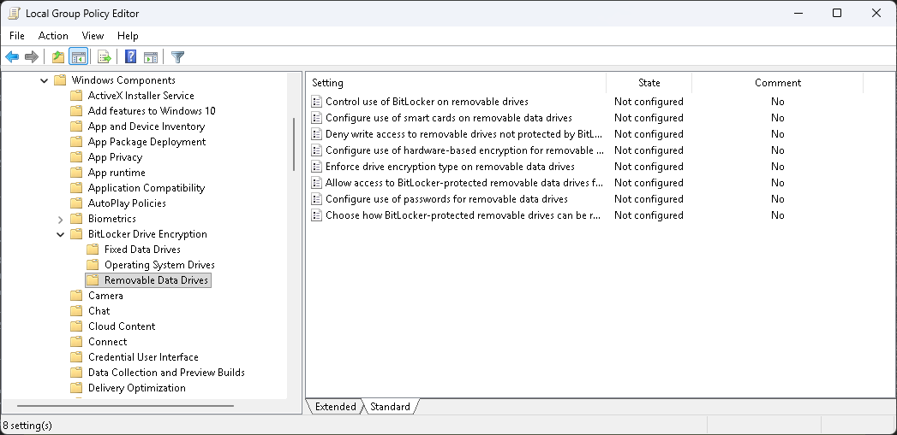
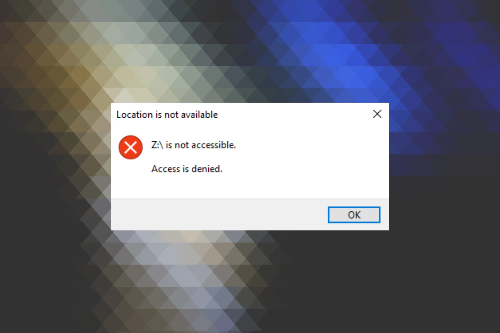
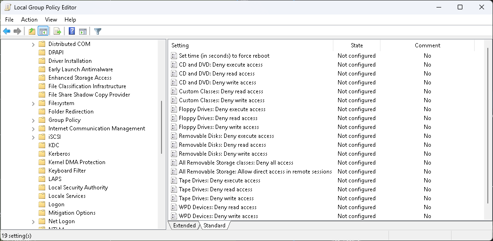
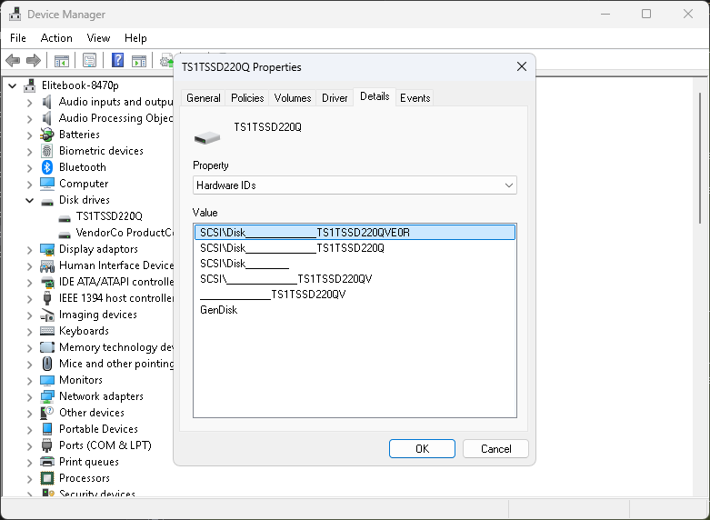
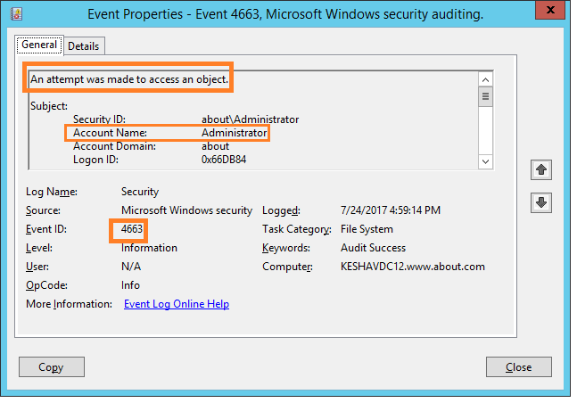

Видове, рискове и защита на данните
Защо управлението на външните запаметяващи устройства е критично за информационната сигурност
В съвременния свят данните са сред най-ценните ресурси на всяка организация. Външните запаметяващи устройства — USB флаш памети, външни твърди дискове, SSD устройства и SD карти — предоставят удобен начин за съхранение и пренос на информация. Въпреки това, тяхната преносимост създава значителни рискове за сигурността.
Политиките за BYOD (Bring Your Own Device) продължават да набират популярност, но заедно с тях нарастват и заплахите от неоторизиран достъп, загуба на данни и зловреден софтуер. Според проучвания, над 70% от служителите използват лични USB устройства на работното си място, без да прилагат каквото и да е криптиране.
USB устройствата са един от най-често използваните вектори за разпространение на зловреден софтуер. Атаки като BadUSB, USB Drop и Juice Jacking демонстрират колко лесно може да бъде компрометирана дори и добре защитена мрежа чрез едно единствено заразено устройство.
Лични устройства без контрол увеличават повърхността за атака в корпоративни мрежи
USB устройствата са основен канал за разпространение на зловреден софтуер
Дори изолирани мрежи са уязвими при физически достъп чрез USB
Ключови моменти в еволюцията на външните запаметяващи устройства и свързаните заплахи
UNIVAC I използва магнитни ленти за съхранение — първият масов външен носител
IBM представя 8-инчовия флопи диск с капацитет 80 KB — революция в преносимостта
Първият PC вирус, разпространяван чрез флопи дискове — зората на USB заплахите
Стандартът Universal Serial Bus е публикуван — унифициран интерфейс за периферни устройства
Trek Technology и IBM представят първите USB флаш памети — краят на флопи дисковете
Най-сложната кибер-атака в историята, разпространена чрез USB — поразява Иранската ядрена програма
Изследователи демонстрират как USB firmware може да бъде модифициран за атаки на ниво хардуер
Нови протоколи постигат скорости от 14 GB/s — външните SSD заменят традиционните HDD
Основните типове външни запаметяващи устройства и техните характеристики
Най-разпространеното преносимо устройство за бърз обмен на данни. Компактно, леко и без движещи се части.
Високопроизводително решение с NVMe контролер. Идеално за видео-обработка и професионална работа.
Икономично решение за масово съхранение. Висок капацитет на ниска цена, но чувствително към удари.
Миниатюрен формат за камери, телефони и IoT устройства. Предлага добро съотношение цена/капацитет.
Оптични носители с дълготрайно съхранение. WORM дискове предлагат защита от презаписване.
Сравнение на основните интерфейси за външно съхранение
| Интерфейс | Макс. скорост | Латентност | Типична употреба |
|---|---|---|---|
| USB 2.0 | 480 Mbps (60 MB/s) | ~1 ms | Периферни устройства, мишки, клавиатури |
| USB 3.0 | 5 Gbps (625 MB/s) | ~0.5 ms | USB флаш, външни HDD |
| USB 3.1 Gen 2 | 10 Gbps (1250 MB/s) | ~0.3 ms | Външни SSD, бързи флаш памети |
| SATA III | 6 Gbps (600 MB/s) | ~0.1 ms | Вътрешни HDD/SSD, док станции |
| NVMe PCIe Gen 4 | 56 Gbps (7000 MB/s) | ~0.02 ms | Високопроизводителни SSD, работни станции |
| NVMe PCIe Gen 5 | 128 Gbps (14000 MB/s) | ~0.01 ms | Сървъри, AI/ML натоварвания |
| Thunderbolt 3/4 | 40 Gbps (5000 MB/s) | ~0.05 ms | Видео-обработка, eGPU, докинг |
Сравнение на файловите системи по ниво на сигурност и функционалност
Основните заплахи при използване на външни запаметяващи устройства
Автоматично изпълнение на зловреден код при свързване на заразено устройство. Включва вируси, троянски коне и rootkits.
Физическа загуба на некриптирано устройство води до изтичане на чувствителни данни, включително лични и корпоративни.
Криптовирус, разпространяван чрез USB, може да заключи файлове и да поиска откуп за дешифриране.
Механична повреда на магнитните глави при удар или вибрация. Може да доведе до пълна загуба на данни.
Неочаквано прекъсване на захранването или неправилно изваждане води до повреда на файловата структура.
Случайно изтриване, форматиране или неправилна конфигурация от потребители без техническа подготовка.
Криптиране, резервни копия и най-добри практики за информационна сигурност
Microsoft Windows
Крос-платформен
Linux (dm-crypt)
Поддържайте минимум три копия на всеки важен файл
Съхранявайте на поне два различни типа устройства
Едно копие трябва да е на отдалечено местоположение
Инвентаризация на всички одобрени USB устройства
Класификация на данните по ниво на чувствителност
Задължително AES-256 криптиране на преносими носители
Прилагане на принципа за минимални привилегии
Обучение на персонала за USB-базирани заплахи
Мониторинг на свързваните устройства чрез Event 4663
Автоматично сканиране за зловреден софтуер при свързване
Процедура за инцидентна реакция при изгубено устройство
Отдалечено изтриване (remote wipe) на криптирани носители
Възстановяване от резервни копия (3-2-1 правило)
Реални инциденти, свързани с външните запаметяващи устройства
Кибер-оръжие, разпространявано чрез заразени USB устройства, което поразява SCADA системите на иранската ядрена централа в Натанц. Повреждат се над 1000 центрофуги.
Мъж открива на улицата USB флашка, съдържаща 76 папки с некриптирани данни за сигурността на летище Хийтроу — маршрути на кралицата, камери и пътеки за евакуация.
IBM забранява използването на всички преносими USB устройства за повече от 350 000 служители. Компанията мигрира към облачни решения и VPN за обмен на данни.
Скрийншотове от конфигурацията на защитни мерки в реална среда








Разгледайте графики, таблици и статистически данни за външните запаметяващи устройства
Към графиките